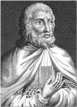
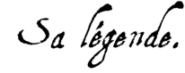
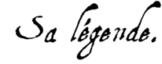

|
De 1307 à 1314
[13 Octobre 1311] [3 Avril 1312]
Au commencement des procédures, trente-six chevaliers étaient morts à Paris dans les tortures. Philippe le Bel mit en usage tous les moyens qui pouvaient perdre l'Ordre et les chevaliers dans l'opinion publique. Le pape, croyant sa propre autorité blessée par les agents du roi, avait d'abord réclamé en faveur des chevaliers. Philippe sut bientôt calmer les scrupules du pontife. La faculté de théologie applaudit aux mesures du roi, et une assemblée convoquée à Tours (24 mars 1308), s'expliquant au nom du peuple français, demanda la punition des accusés, et déclara au roi qu'il n'avait pas besoin de l'intervention du pape pour punir des hérétiques notoirement coupables.
Jacques de Molay avait été envoyé avec d'autres chefs de l'Ordre auprès du pape, pour s'expliquer devant lui, mais sa marche fut arrêtée à Chinon, où des cardinaux vinrent l'interroger. Des historiens ont cru que Philippe le Bel avait procuré la tiare à Clément V, en lui imposant diverses conditions, l'une desquelles était l'abolition de l'Ordre. Dans les premières informations, un très grand nombre de chevaliers firent les aveux exigés ; et l'on croit généralement que le Grand Maître lui-même céda, comme ceux-ci, ou à la crainte des tourments et de la mort, ou à l'espérance qu'il obtiendrait quelques conditions favorables pour l'Ordre, s'il ne résistait pas aux projets de la politique du roi.
Cependant le pape, obligé de donner une apparence juridique aux moyens violents qui devaient amener la destruction de l'Ordre, convoqua en 1308 un concile œcuménique à Vienne pour 1310 (il s'ouvrira finalement en 1311), et nomma une commission qui se rendit à Paris, afin de prendre contre l'Ordre en général une information nécessaire et même indispensable pour motiver la décision du concile. La bulle porte que l'Ordre comparaîtra devant le concile, par le ministère de ses défenseurs.
Jacques de Molay fut amené en présence de ces commissaires du pape, et on lui lut, en langue vulgaire, les pièces de la procédure. Quand il entendit des lettres apostoliques qui supposaient qu'il avait fait à Chinon certains aveux, il manifesta son étonnement et son indignation contre une telle assertion.
Un grand nombre de Templiers comparurent après leur chef. L'affaire prit alors un caractère imposant et extraordinaire ; les chevaliers se montrèrent dignes et de l'Ordre et d'eux-mêmes, et des grandes familles auxquelles ils avaient l'honneur d'appartenir. La plupart de ceux qui, forcés par les tourments ou la crainte, avaient fait des aveux devant les inquisiteurs, les révoquèrent devant les commissaires du pape. Ils se plaignirent hautement des cruautés qu'on avait exercées envers eux, et déclarèrent en termes énergiques vouloir défendre l'Ordre jusqu'à la mort, de corps et d'âme, devant et contre tous, contre tout homme vivant, excepté le pape et le roi.
Le Grand Maître demandait sans cesse qu'on le conduisît en présence du pape, qui devait le juger. 546 Templiers, soit de ceux qui avaient fait des aveux, soit de ceux qui avaient toujours résisté aux moyens des oppresseurs, se déclarèrent et se constituèrent défenseurs de l'Ordre. Bientôt d'autres chevaliers, détenus dans les diverses prisons de la France, demandèrent à partager cet honorable péril, et ils furent traduits à cet effet dans les prisons de la capitale. Alors le nombre des défenseurs fut d'environ 900. Il était facile de justifier l'Ordre ; et, comme ils commençaient à le faire avec un succès qui déconcertait le roi et ses agents, on imagina un moyen aussi cruel que prompt : ce fut de livrer au jugement des inquisiteurs les chevaliers qui, ayant rétracté les aveux précédents, soutenaient l'innocence de l'Ordre.
Les affaires des Templiers semblaient donc en bonne voie, vers le printemps de 1310. L'ordre avait trouvé à Paris une légion de défenseurs, représentés par des procureurs réguliers. Pour ceux qui voulaient étouffer la vérité, il n'était que temps d'agir. Ils agirent, en effet : et ils n'avaient encore imaginé rien d'aussi scandaleux que l'expédient dont ils usèrent. Ils profitèrent de ce que les procès contre l'Ordre et contre les personnes se poursuivaient parallèlement, et de ce que les juges du procès contre les personnes étaient, à Paris, à leur dévotion, pour effrayer mortellement les témoins du procès contre l'Ordre. Le jugement des personnes, dans l'évêché de Paris, appartenait, en vertu des lettres du pape, au concile provincial, présidé par l'archevêque de Sens, métropolitain de Paris.
Or, l'archevêque de Sens était le frère de l'un des principaux ministres du roi, Enguerrand de Marigny. Il assembla à Paris le concile de sa province. Ce tribunal d'inquisition avait le droit de condamner sans entendre les accusés et de faire exécuter ses arrêts du jour au lendemain. Les procureurs des prisonniers comprirent la terrible menace impliquée dans la brusque convocation de cette assemblée. Ils la signalèrent, dès le 10 mai 1310, à la commission pontificale. Mais le président de ladite commission, l'archevêque de Narbonne, se retira dès qu'ils eurent dénoncé l'attentat projeté, disant « qu'il avait à entendre ou à célébrer la messe ». Les autres commissaires ne surent que répondre : « Nous vous plaignons de tout notre cœur ; mais l'archevêque de Sens agit régulièrement contre les personnes ; nous ne pouvons rien. »
Tous ceux qui persistèrent dans leurs rétractations furent déclarés hérétiques relaps, livrés à la justice séculière et condamnés au feu. Ceux qui n'avaient jamais fait d'aveux et qui ne voulurent pas en faire furent condamnés à la détention perpétuelle, comme chevaliers non réconciliés. Quant à ceux qui ne rétractèrent pas les aveux des impiétés et des turpitudes imputées à l'Ordre, ils furent mis en liberté, reçurent l'absolution et furent nommés Templiers réconciliés. Pour accuser, interroger, juger les prétendus relaps, les condamner aux flammes et faire exécuter le jugement, il suffit du temps qui s'écoula du lundi 11 mai au lendemain matin. 54 chevaliers périrent à Paris ce jour-là. Condamnés comme relaps par l'archevêque de Sens et ses suffragants, ils furent empilés dans des charrettes, et brûlés publiquement entre le bois de Vincennes et le Moulin-à-Vent de Paris, hors de la porte Saint-Antoine.
La procédure indique nominativement quelques-uns des chevaliers qui subirent cet honorable supplice. Parmi eux, Gaucerand de Buris, Guido de Nici, Martin de Nici, Gaultier de Bullens, Jacques de Sansy, Henry d'Anglesy, Laurent de Beaune, Raoul de Frémi. Tous les historiens qui ont parlé du supplice des chevaliers du Temple ont attesté la noble intrépidité qu'ils montrèrent jusqu'à la mort : entonnant les saints cantiques et bravant les tourments avec un courage chevaleresque et une résignation religieuse, ils se montrèrent dignes de la pitié de leurs contemporains et de l'admiration de la postérité. « Ils souffrirent, dit un chroniqueur du temps, avec une constance qui mit leurs âmes en grand péril de damnation, car elle induisit le peuple ignorant à les considérer comme innocents. »
C'en était fait ; il n'était plus possible d'entretenir la moindre illusion sur la liberté de la défense. Deux des procureurs élus, sur quatre, avaient disparu. La commission n'en reprit pas moins, le 13, l'ironique comédie de ses séances dans la chapelle Saint-Éloi. Mais quelque chose avait changé depuis la veille. L'apparition du premier témoin qu'on introduisit fut émouvante. C'était un chevalier du diocèse de Langres, Aimery de Villiers-le-Duc, âgé d'une cinquantaine d'années, templier depuis vingt-huit ans. Comme on lui lisait les actes d'accusation, il interrompit, « pâle et comme terrifié », protestant que, s'il mentait, il voulait aller droit en enfer par mort subite, se frappant la poitrine de ses poings, levant les bras vers l'autel, les genoux en terre. « J'ai avoué, dit-il, quelques articles à cause de tortures que m'ont infligées Guillaume de Marcilly et Hugues de La Celle, chevaliers du roi, mais tout est faux. Hier, j'ai vu cinquante-quatre de mes frères, dans les fourgons, en route pour le bûcher, parce qu'ils n'ont pas voulu avouer nos prétendues erreurs ; j'ai pensé que je ne pourrais jamais résister à la terreur du feu. J'avouerais tout, je le sens ; j'avouerais que j'ai tué Dieu, si on voulait."
Et il supplia les commissaires et les notaires de ne pas répéter ce qu'il venait de dire à ses gardiens, de peur qu'il ne fût brûlé, lui aussi. Cette déposition tragique fit assez d'impression sur les gens du pape pour qu'ils se décidassent à surseoir provisoirement. Ils ne reprirent leurs opérations, désormais fictives, qu'après six mois d'interruption, et seulement pour la forme.
Les témoins entendus à partir de décembre 1310 furent tous des Templiers réconciliés par les synodes provinciaux, c'est-à-dire soumis, qui comparurent « sans manteau et barbe rase ». Quand l'enquête fut enfin close, on l'expédia en deux exemplaires pour servir à l'édification des pères du prochain concile de Vienne. Elle remplit deux cent dix-neuf feuillets d'une écriture compacte.
13 Octobre 1311 : Ouverture du concile de Vienne
 Le concile de Vienne, prorogé à plusieurs reprises, avait été fixé en dernier lieu au mois d'octobre 1311 et s'ouvrit le 13 de ce mois, jour anniversaire de l'arrestation, quatre ans plus tôt, des Templiers dans toute la France. Clément V employa les mois qui précédèrent ce terme à réunir, contre ceux qu'il avait condamnés d'avance, un immense arsenal de preuves. Il savait qu'on disait couramment en Occident : « Les Templiers ont nié partout, excepté ceux qui ont été sous la poigne du roi de France ». Il fallait couper court à ces rumeurs ; c'est pour cela qu'il rédigea alors des bulles pour exhorter les rois d'Angleterre et d'Aragon à employer la torture, malgré les coutumes locales de leurs royaumes, qui interdisaient cette procédure. Des ordres de torture furent expédiés aussi, au dernier moment, en Chypre et au Portugal. Il y eut encore, à cette occasion, des effusions de sang martyr. Nous avons la relation des supplices infligés en août et septembre 1311, par l'évêque de Nîmes et l'archevêque de Pise ; ces prélats n'envoyèrent, du reste, au pape, que les dépositions agréables ; ils passèrent sous silence les témoignages des obstinés.
Le concile de Vienne, prorogé à plusieurs reprises, avait été fixé en dernier lieu au mois d'octobre 1311 et s'ouvrit le 13 de ce mois, jour anniversaire de l'arrestation, quatre ans plus tôt, des Templiers dans toute la France. Clément V employa les mois qui précédèrent ce terme à réunir, contre ceux qu'il avait condamnés d'avance, un immense arsenal de preuves. Il savait qu'on disait couramment en Occident : « Les Templiers ont nié partout, excepté ceux qui ont été sous la poigne du roi de France ». Il fallait couper court à ces rumeurs ; c'est pour cela qu'il rédigea alors des bulles pour exhorter les rois d'Angleterre et d'Aragon à employer la torture, malgré les coutumes locales de leurs royaumes, qui interdisaient cette procédure. Des ordres de torture furent expédiés aussi, au dernier moment, en Chypre et au Portugal. Il y eut encore, à cette occasion, des effusions de sang martyr. Nous avons la relation des supplices infligés en août et septembre 1311, par l'évêque de Nîmes et l'archevêque de Pise ; ces prélats n'envoyèrent, du reste, au pape, que les dépositions agréables ; ils passèrent sous silence les témoignages des obstinés.
Guillaume Le Maire, évêque d'Angers, convoqué au concile œcuménique de Vienne, comme tous les prélats de la Chrétienté, rédigea son « avis » par écrit, en ces termes : « Il y a, dit l'évêque, deux opinions au sujet des Templiers ; les uns veulent détruire l'Ordre sans tarder, à cause du scandale qu'il a suscité dans la Chrétienté et à cause des deux mille témoins qui ont attesté ses erreurs ; les autres disent qu'il faut permettre à l'Ordre de présenter sa défense, parce qu'il est mauvais de couper un membre si noble de l'Église sans discussion préalable. Eh bien, je crois, pour ma part, que notre seigneur le pape, usant de sa pleine puissance, doit supprimer ex officio un ordre qui, autant qu'il a pu, a mis le nom chrétien en mauvaise odeur auprès des incrédules et qui a fait chanceler des fidèles dans la stabilité de leur foi. » Guillaume Le Maire avait son siège fait. Mais supposé qu'un évêque, moins zélé royaliste, eût voulu s'éclairer sincèrement au moment de l'ouverture du procès, voici comment la question de la culpabilité du Temple se serait posée à sa conscience.
Au cours de la lecture des procédures faites contre l'Ordre, 9 chevaliers se présentèrent et offrirent de prendre la défense de l'Ordre accusé. L'auguste assemblée s'attendait à ce dernier acte d'équité, d'intérêt ou de pitié. Or le pape les fit mettre aux fers, et l'Ordre ne fut point défendu par ces dignes mandataires, quoique les membres du concile fussent d'avis de les entendre. Clément V se vanta de cet acte dans une lettre du 11 novembre 1311 adressée au roi. La session se termina donc brusquement sans que l'incident eût d'autre suite.
L'ordre du Temple était accusé d'être tout entier corrompu par des superstitions impies. D'après les formulaires d'enquête pontificaux, qui contiennent jusqu'à cent vingt-sept rubriques, il était notamment inculpé d'imposer à ses néophytes, lors de leur réception, des insultes variées au crucifix, des baisers obscènes, et d'autoriser la sodomie. Les prêtres, en célébrant la messe, auraient omis volontairement de consacrer les hosties ; ils n'auraient pas cru à l'efficacité des sacrements.
Enfin les Templiers auraient été adonnés à l'adoration d'une idole (en forme de tête humaine) ou d'un chat ; ils auraient porté nuit et jour, sur leurs chemises, des cordelettes enchantées par le contact de cette idole. Telles étaient les accusations majeures. Il y en avait d'autres : le grand-maître et les autres officiers de l'Ordre, quoiqu'ils ne fussent pas prêtres, se seraient cru le droit d'absoudre les frères de leurs péchés ; les biens étaient mal acquis, les aumônes mal faites. Le réquisitoire représentait tous ces crimes comme commandés par une Règle secrète.
Il va de soi que les officiers de Philippe le Bel pratiquèrent dans tous les « Temples » de France de sévères perquisitions, en vue d'y découvrir des objets compromettants, à savoir : des exemplaires de la Règle secrète, des idoles, des livres hérétiques. La lecture des inventaires nous apprend qu'ils ne trouvèrent que quelques ouvrages de piété et des livres de comptes ; çà et là, des exemplaires de la règle irréprochable de saint Bernard. A Paris, Guillaume Pidoye, administrateur des biens séquestrés, présenta aux commissaires de l'Inquisition « une tête de femme en argent doré, qui renfermait des fragments de crâne enveloppés dans un linge ».
C'était un de ces reliquaires comme il y en a dans la plupart des trésors ecclésiastiques du XIIIe siècle ; il était exposé, sans doute, les jours de fête, à la vénération des Templiers, et il n'est pas impossible que des chevaliers aient déposé dessus, pour les sanctifier, les cordelettes ou scapulaires dont la règle primitive leur imposait de se ceindre, en signe de chasteté ; mais il n'y a pas là d'idole ni d'idolâtrie, puisque les fidèles qui font toucher, encore aujourd'hui, des chapelets aux reliques ne passent point pour des idolâtres.
L'enquête ne produisit donc contre l'Ordre aucun document matériel, aucun « témoin muet ». Toute la preuve repose sur des témoignages oraux. Mais les dépositions à charge, si nombreuses qu'elles soient, perdent toute valeur si l'on considère qu'elles ont été arrachées par la procédure inquisitoriale. Le mot d'Aimery de Villiers-le-Duc est décisif : « J'avouerais que j'ai tué Dieu. » Il ne reste donc qu'à examiner les faits allégués, au point de vue du bon sens.
Si les Templiers avaient réellement pratiqué les rites et les superstitions qui leur sont attribués, ils auraient été des sectaires ; et alors il se serait trouvé parmi eux, comme dans toutes les communautés hétérodoxes, des enthousiastes pour affirmer leur foi en demandant à participer aux joies mystiques de la persécution. Or, pas un templier, au cours du procès, ne s'est obstiné dans les erreurs de sa prétendue secte. Tous ceux qui ont avoué le reniement et l'idolâtrie se sont fait absoudre.
Chose surprenante, la doctrine hérétique du Temple n'aurait pas eu un martyre ! Car les centaines de chevaliers et de frères sergents qui sont morts dans les affres de la prison, entre les mains des tortionnaires, ou sur le bûcher, ne se sont pas sacrifiés pour des croyances ; ils ont mieux aimé mourir que d'avouer, ou, après avoir avoué par force, que de persister dans leurs confessions. On a supposé que les Templiers étaient des Cathares ; mais les Cathares, comme les anciens montanistes d'Asie, avaient la passion du supplice ; au temps même de Clément V, les « dolcinistes » d'Italie se sentaient fortifiés miraculeusement par la proclamation répétée et frénétique de leurs doctrines. Chez les Templiers, pas de joie sacrée, pas de triomphe en présence du bourreau. C'est pour une négation qu'ils ont tout enduré.
Si les Templiers s'étaient réellement livrés aux excès, non seulement monstrueux, mais stupides, qui leur furent reprochés, tous, interrogés l'un après l'autre, et forcés de confesser, auraient décrit ces excès de la même manière. D'accord entre eux quand ils parlent des cérémonies légitimes de l'Ordre, ils varient grandement, au contraire, sur la définition des prétendus rituels blasphématoires. Michelet, qui croyait aux désordres du Temple, a très bien observé « que les dénégations sont identiques, tandis que les aveux sont tous variés de circonstances spéciales » ; il en tire la conclusion « que les dénégations étaient convenues d'avance et que les différences des aveux leur donnent un caractère particulier de véracité ». Mais quoi ? Si les Templiers étaient innocents, leurs réponses aux mêmes chefs imaginaires d'accusation ne pouvaient pas ne pas être identiques ; s'ils étaient coupables, leurs aveux auraient dû être pareillement identiques.
L'invraisemblance des charges, la férocité des procédés d'enquête, le caractère contradictoire des aveux étaient sûrement de nature à inquiéter des juges, même des juges de ce temps-là. Et quels cœurs auraient résisté à la comparution des suppliciés de l'enquête, à l'exhibition de leurs plaies, à leurs protestations d'amour pour l'Église persécutrice, à ces accents douloureux dont l'écho, recueilli par les notaires de la grande commission, émeut et persuade encore ! Ceux qui avaient leurs raisons pour que la lumière ne se fit pas devaient chercher, par tous les moyens, à supprimer, jusqu'au bout, les débats publics. Le bâillon qui fut mis, en effet, sur la bouche des derniers défenseurs de l'Ordre au concile de Vienne, réuni pour les entendre, est encore un argument en faveur des Templiers.
L 'histoire du concile de Vienne est mal connue. Mais on devine des intrigues du roi de France pour forcer la main du pape, du pape pour escamoter la sentence du concile. Clément V était disposé à en finir ; il disait, au rapport d'Alberico da Rosate : « Si l'Ordre ne peut pas être détruit per viam justitiae, qu'il le soit per viam expedientiae , pour que notre cher fils le roi de France ne soit pas scandalisé. » Mais il ne se sentait pas maître des trois cents pères assemblés : il n'était sûr que des évêques français ; ceux d'Allemagne, d'Aragon, de Castille et d'Italie, qui avaient presque tous acquitté les Templiers de leurs circonscriptions diocésaines, inclinaient à instituer une discussion en règle.
Pour comble d'embarras, il avait fallu que Clément fît enfermer les neuf chevaliers du Temple qui avaient paru inopinément dans Vienne, comme représentants des Templiers fugitifs qui erraient dans les montagnes du Lyonnais : ce qui revenait à supprimer une seconde fois la défense, en violation du droit. Des prélats étrangers s'étaient indignés. On comprit alors autour de Philippe le Bel qu'il y avait lieu de sortir l'ultima ratio de la force. De Lyon, d'où il surveillait le concile, et où il avait convoqué une nouvelle assemblée des prélats, nobles et communautés du royaume « pour la défense de la foi catholique », le roi se rendit à Vienne (mars 1312) avec une armée. Il s'assit à côté du pape. Celui-ci, raffermi, s'empressa de faire lire, devant les pères, une bulle qu'il avait élaborée d'accord avec les conseillers royaux.
3 Avril 1312 : Suppression de l'Ordre du Temple
[Haut de page] [13 Octobre 1311]
 C'est la bulle Vox in excelso, du 3 avril 1312 : le pape avoue qu'il n'existe point contre l'Ordre de quoi justifier une condamnation canonique ; mais il considère que l'Ordre n'en est pas moins déshonoré, qu'il est odieux au roi de France, que personne n'a « voulu » prendre sa défense, que ses biens sont et seraient de plus en plus dilapidés au grand dommage de la Terre Sainte pendant la durée d'un procès dont on ne saurait prévoir la fin ; de là, la nécessité d'une solution provisoire.
C'est la bulle Vox in excelso, du 3 avril 1312 : le pape avoue qu'il n'existe point contre l'Ordre de quoi justifier une condamnation canonique ; mais il considère que l'Ordre n'en est pas moins déshonoré, qu'il est odieux au roi de France, que personne n'a « voulu » prendre sa défense, que ses biens sont et seraient de plus en plus dilapidés au grand dommage de la Terre Sainte pendant la durée d'un procès dont on ne saurait prévoir la fin ; de là, la nécessité d'une solution provisoire.
Il supprime donc l'Ordre du Temple, non par voie de « sentence définitive », mais par voie de provision ou de règlement apostolique, « avec l'approbation du Saint Concile ». Ainsi périt l'Ordre du Temple, supprimé, non condamné, égorgé sans résistance.
Les actes du concile de Vienne ont été soustraits dans le temps, et la bulle qui supprime par voie de provision l'Ordre du Temple, n'a été imprimée pour la première fois qu'en 1606. Dans sa bulle Considerantes, publiée quatre jours seulement après la bulle d'abolition, le pape déclare que l'ensemble des informations faites contre l'Ordre et les chevaliers n'offre pas des preuves suffisantes pour les croire coupables, mais qu'il en résulte une grande suspicion. C'est de cette forme employée par Clément V contre les Templiers, que Clément XIV se prévalut quand il abolit l'Ordre des Jésuites ; dans le bref du 31 juillet 1773, on lit : « Le pape Clément V a supprimé et totalement éteint l'Ordre militaire des Templiers, à cause de la mauvaise réputation où il était alors, quoique cet ordre eût été légitimement confirmé, quoiqu'il eût rendu à la république chrétienne des services si éclatants que le saint-siège apostolique l'avait comblé de biens, de privilèges, de pouvoirs, d'exemptions et de permissions, et quoique enfin le concile de Vienne, que ce pontife avait chargé de l'examen de l'affaire, eût été d'avis de s'abstenir de porter un jugement formel et définitif. »
Les Templiers de France n'ont pas eu la moindre velléité de se servir de leurs armes. N'est-ce pas une preuve de plus de la soumission de ces hommes que des modernes, afin d'excuser à toute force un criant déni de justice, ont gratuitement accusés d'avoir formé un État dans l'État et d'avoir mis en péril l'unité de la monarchie française ? La bulle Vox in excelso laissa en suspens deux questions difficiles : le sort des templiers prisonniers, le sort des biens du Temple supprimé.
La curée des biens du Temple avait commencé pendant le procès, en dépit de la vigilance des administrateurs. L'appétit des princes avait été aiguisé par cette affaire au point que quelques-uns songèrent à faire partager le sort des Templiers aux hospitaliers et aux chevaliers Porte-Glaive. L'ordre teutonique fut accusé d'hérésie en 1307 par l'archevêque de Riga. C'est déjà l'avidité spoliatrice des princes protecteurs de la Réforme. Après le concile de Vienne, on procéda au dépècement méthodique de la proie. En théorie, toutes les propriétés de l'Ordre furent transférées au Saint-Siège, qui les remit aux hospitaliers, mais ce transfert fictif n'empêcha pas la Couronne de retenir la meilleure part. D'abord les dettes du roi envers l'Ordre furent éteintes, car les canons défendaient de payer leur dû aux hérétiques.
En outre, il avait saisi tout le numéraire accumulé dans les banques du Temple. Il alla plus loin lorsque les dépouilles des Templiers eurent été officiellement attribuées à l'Hôpital : il prétendit que ses anciens comptes avec le Temple n'ayant pas été réglés, il restait créancier de l'Ordre pour des sommes considérables, dont il était d'ailleurs hors d'état de spécifier le montant. Les hospitaliers, substitués aux droits et aux charges du Temple, furent obligés de consentir, pour ce motif, à une transaction : ils payèrent deux cent mille livres tournois, le 21 mars 1313 ; et ce sacrifice ne les délivra même pas des réclamations de la Couronne, car ils plaidaient encore, à ce sujet, au temps de Philippe le Long. Quant aux biens immobiliers, Philippe le Bel en perçut paisiblement les revenus jusqu'à sa mort, et plus tard les hospitaliers, pour en obtenir la délivrance, durent indemniser la Couronne de ce qu'elle avait déboursé pour l'entretien des Templiers emprisonnés de 1307 à 1312 : frais de geôle et de torture. Il paraît avéré, en résumé, que les hospitaliers furent plutôt appauvris qu'enrichis par le cadeau fait à leur ordre.
Restaient les prisonniers. Il paraît qu'après l'abolition de l'Ordre, la persécution contre les chevaliers cessa. On relâcha ceux qui voulurent passer par l'humiliation des aveux. Parmi ces libérés, les uns vagabondèrent, d'autres essayèrent de gagner leur vie par des travaux manuels ; quelques-uns entrèrent dans des couvents, et quelques-uns, dégoûtés du métier, se marièrent. Les impénitents et les relaps furent frappés des châtiments de la loi inquisitoriale. Les plus célèbres de ces relaps de la dernière heure furent deux des hauts dignitaires que le pape avait réservés à son jugement personnel : Jacques de Molay et le précepteur de Normandie, Geoffroy de Charnay. Les premiers aveux du Grand Maître et la longue persécution dont il avait été l'objet permettaient d'espérer qu'abattu par l'infortune, il renouvellerait publiquement la confession des crimes de l'Ordre et par là justifierait les rigueurs exercées par la justice du roi.
Le Grand Maître de l'Ordre du Temple avait toujours réclamé son jugement, que le pape s'était réservé personnellement ; mais le pontife, craignant la présence du Grand Maître, nomma trois commissaires pour le juger à Paris, ainsi que trois autres chefs de l'Ordre. C'est donc seulement le 22 décembre 1312 que Clément V, de concert avec Philippe le Bel, appointa trois cardinaux français, Arnaud de Farges son neveu, Arnaud Novelli moine de Cîteaux, et Nicolas de Fréminville frère prêcheur, pour examiner ces grands chefs, qui naguère, pour se sauver eux-mêmes, avaient abandonné leurs frères. Ils étaient chargés d'entendre la dernière déposition de Jacques de Molay, et celle des trois chefs détenus avec lui, dont Geoffroy de Charnay. Que leur demandait-on ? De reconnaître la justice du double arrêt de condamnation, fondé sur la vérité des accusations imputées à l'Ordre des Templiers et conformes aux témoignages déjà nombreux recueillis par les tribunaux : c'eût été pour les deux souverains un triomphe éclatant et ils s'y attendaient.…/…
    |